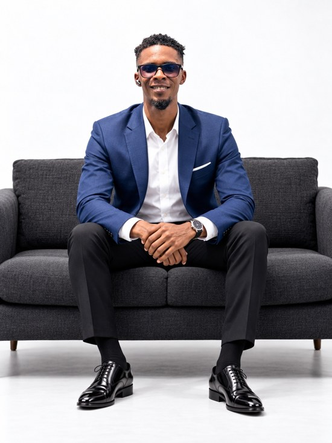

One point of contact
Clear communication and accountable coordination throughout the agreed engagement.
About AVE
AVE connects operational experience and a flexible network of independent professionals, suppliers and service providers around each client’s requirement.
01 / WHO WE ARE
AVE Consultancy Limited is a founder-led, multidisciplinary service coordination and project delivery company based in Abuja, Nigeria.
Our role is to understand what needs to happen, organise suitable resources and maintain a clear point of client contact. Our five service areas reflect different needs that can benefit from a coordinated approach.
We work through project-based arrangements. Independent specialists and suppliers are engaged according to the actual scope, rather than presented as permanently staffed departments.
See how the model works02 / WHAT CLIENTS CAN EXPECT
Clear communication and accountable coordination throughout the agreed engagement.
Independent specialists and suppliers selected around the actual task.
Milestones, documentation and responsive attention to delivery issues.
A clear distinction between AVE’s coordination role and specialist-provider work.

03 / LEADERSHIP
FOUNDER & CHIEF EXECUTIVE OFFICER
Andy is a multidisciplinary entrepreneur and operations coordinator whose background spans construction site activities, materials sourcing, logistics, teaching, diction coaching and executive administration.
His approach combines first-hand involvement with the mobilisation of independent collaborators around the needs of each assignment.
The supplied company profile lists building and site-management work with Donulisa Integrated Services Nigeria Limited, diction training with Fluent Star Academy and Business Consultancy, and experience in English and Literature teaching, executive administration and youth leadership.
Background and credentials are reported in the supplied company profile and have not been independently verified for this website.
LET’S CONNECT
Tell us what you need to achieve. We’ll discuss the scope, the right capabilities and a practical way forward.
Start your enquiry